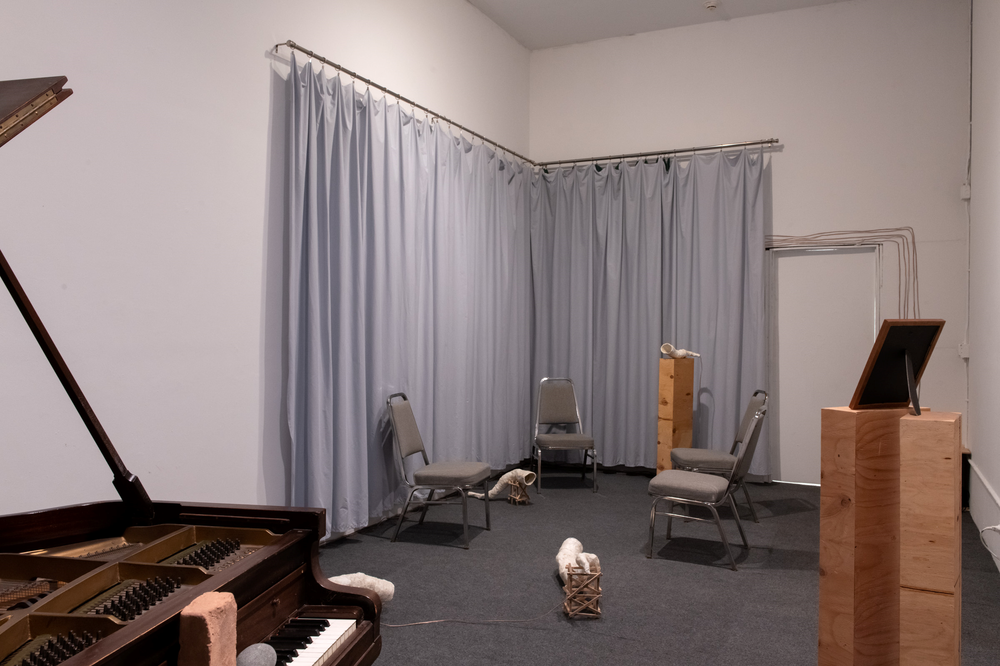
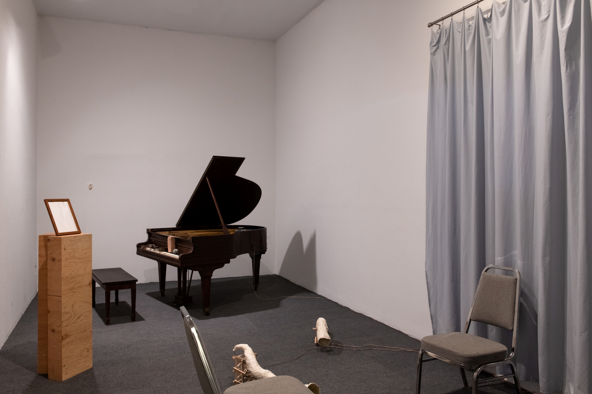
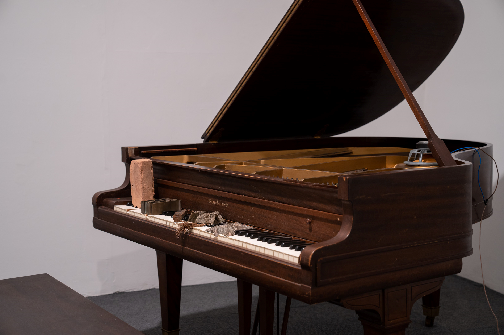
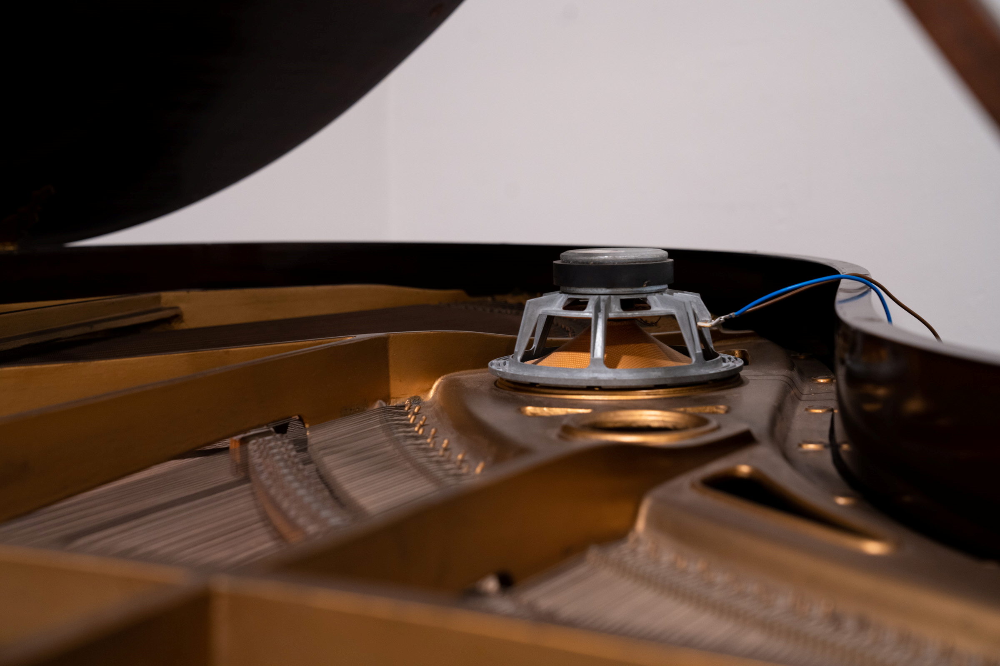
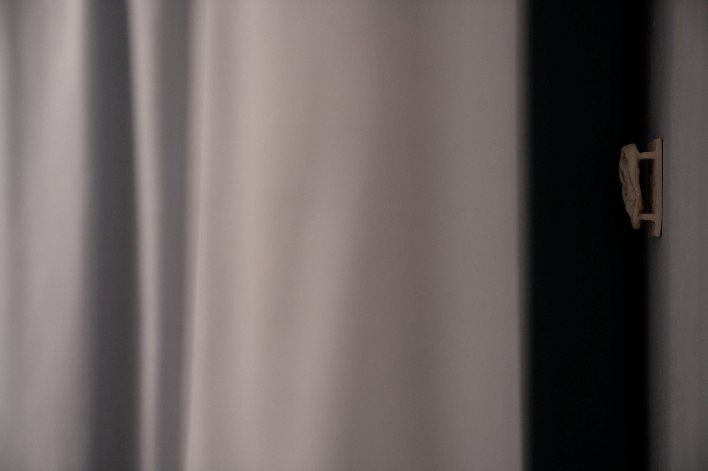

- "I recognize the mountains."
- (2023)
The audio recordings document conversations between the artist and his grandfather, which address the period between 1926-1944. These recordings were made between 2018-2023.










